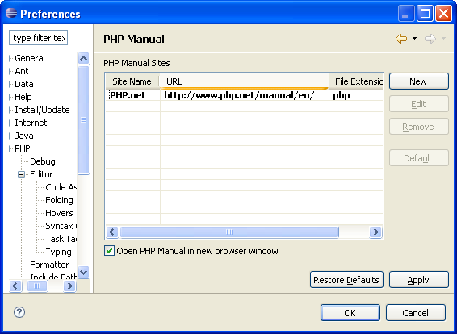
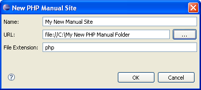

This configuration dialog sets the location of the PHP Manual and the method by which it is opened.
The PHP Manual contains an explanation of all PHP functions (at the time the manual was written). It can be accessed on-line or locally from within the PDT Editor in order to provide an immediate explanation of the functionality and proper use of all PHP functions.
The following options are available, you can:
Note: The initial, default site, cannot be removed or edited.
Select Windows > Preferences > PHP > Manual. The PHP Manual dialog will open.

Click New
to add a new site. The New PHP Manual
Site dialog will open. Select the required Name,
URL and File
Extension; click OK.
The PHP manual will open as determined above.
